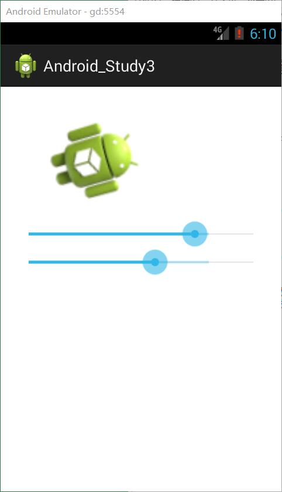

进度条控件
这个相对比较简单，常用的就是开始拖动，停止拖动，进度改变这三个监听器。
1
2
3
4
5
6
7
8
9
| <SeekBar
android:id="@+id/seekBar1"
android:layout_width="match_parent"
android:layout_height="wrap_content"
android:layout_alignParentTop="true"
android:layout_centerHorizontal="true"
android:layout_marginTop="71dp"
android:progress="60"
android:secondaryProgress="80" />
|
- progress是显示的进度
- secondaryProgress是二层显示的一个进度，颜色是虚的
常用方法：
1
2
3
4
5
6
7
8
9
10
11
12
13
14
15
16
17
18
19
20
21
22
| Sb_One.setOnSeekBarChangeListener(new OnSeekBarChangeListener() {
@Override
public void onStopTrackingTouch(SeekBar seekBar) {
Log.d("SeekBar_Stop", "Stop");
}
@Override
public void onStartTrackingTouch(SeekBar seekBar) {
Log.d("SeekBar_Start", "Start");
}
@Override
public void onProgressChanged(SeekBar seekBar, int progress, boolean fromUser) {
Log.d("SeekBar_Progress", progress+"");
}
});
}
|
图像控件
就是显示图片的一个东西，但因为是显示图片，所以他的属性有点多，而且有点乱，感觉就是用到的时候在去查询就可以了。
常见属性
1
2
3
4
5
6
7
8
9
10
11
12
| <ImageView
android:layout_width="wrap_content"
android:layout_height="wrap_content"
android:layout_alignLeft="@+id/seekBar1"
android:layout_below="@+id/seekBar1"
android:layout_marginTop="29dp"
android:background="@android:color/darker_gray"
android:maxHeight="300dp"
android:maxWidth="300dp"
android:src="@drawable/ic_launcher"
android:adjustViewBounds="true"
/>
|
- adjustViewBounds：这个看名字就知道就是一个是否自动调整和图像一样，这个是和maxHeight与maxWidth一起才有效果的，也是必须和他们一起。
android:scaleType="fitXY"这个上面XML没写，但是也是比较常用，有下面几个值可以供我们选择：
| 值 |
作用 |
| fitXY |
拉伸图片（不按比例）以填充View的宽高 |
| fitStart |
按比例拉伸图片，拉伸后图片的高度为View的高度，且显示在View的左边 |
| fitCenter |
按比例拉伸图片，拉伸后图片的高度为View的高度，且显示在View的中间 |
| fitEnd |
按比例拉伸图片，拉伸后图片的高度为View的高度，且显示在View的右边 |
| center |
按原图大小显示图片，但图片宽高大于View的宽高时，截图图片中间部分显示 |
| centerCrop |
按比例放大原图直至等于某边View的宽高显示。 |
| centerInside |
当原图宽高或等于View的宽高时，按原图大小居中显示；反之将原图缩放至View的宽高居中显示。 |
这个东西就是这么看看用到的时候进行选择就可以了。但是需要注意的是使用scaleType这个属性我们宽高不要设置为：wrap_content包裹内容，否则看不出效果。
缩放与旋转
我们通过进度条进行实现，这个东西用到了一个矩阵类，这个类呢，我也没怎么研究过，但是使用起来就是用到他一个设置轮值的方法，也就是旋转度的一个方法。
首先我们先配置XML：
1
2
3
4
5
6
7
8
9
10
11
12
13
14
15
16
17
18
19
20
21
22
23
24
25
26
27
| <SeekBar
android:id="@+id/seekBar2"
android:layout_width="match_parent"
android:layout_height="wrap_content"
android:layout_below="@+id/imageView1"
android:layout_centerHorizontal="true"
android:progress="60"
android:secondaryProgress="80" />
<SeekBar
android:id="@+id/seekBar1"
android:layout_width="match_parent"
android:layout_height="wrap_content"
android:layout_below="@+id/seekBar2"
android:layout_centerHorizontal="true"
android:progress="60"
android:secondaryProgress="80" />
<ImageView
android:id="@+id/imageView1"
android:layout_width="match_parent"
android:layout_height="300dip"
android:layout_alignLeft="@+id/seekBar2"
android:layout_alignParentTop="true"
android:layout_marginTop="19dp"
android:scaleType="fitCenter"
android:src="@drawable/ic_launcher" />
|
（在写这个博客的时候解决了一个问题啊哈哈哈！本来还想之后再补上）
先设置那个进度条的大小：
1
2
3
| DisplayMetrics dm = new DisplayMetrics();
getWindowManager().getDefaultDisplay().getMetrics(dm);
Sb_One.setMax(dm.widthPixels);
|
设置完进度条之后，我么来编写放大缩小。
1
2
3
4
| @Override
public void onProgressChanged(SeekBar seekBar, int progress, boolean fromUser) {
im_One.setLayoutParams(new RelativeLayout.LayoutParams(progress,progress*3/4));
}
|
一些累赘的代码我就没copy上去，单子啊这里需要注意要用到我们当前布局下面的LayoutParams生成的类才可以。
旋转的实现我们先new一个矩阵类：
1
2
3
| private Matrix ma;
/*...*/
ma = new Matrix();
|
之后我们再在第二个的拖动事件里面写：
1
2
3
4
5
6
7
| @Override
public void onProgressChanged(SeekBar seekBar, int progress, boolean fromUser) {
ma.setRotate(progress);
Bitmap bit = ((BitmapDrawable)getResources().getDrawable(R.drawable.ic_launcher)).getBitmap();
bit = Bitmap.createBitmap(bit,0,0,bit.getWidth(),bit.getHeight(),ma,true);
im_One.setImageBitmap(bit);
}
|
首先显示设置轮值，然后再获取我们的Bitmap对象，然后创建一幅新的位图，矩阵信息用我们设置过轮值的，然后再设置图片就好了。
